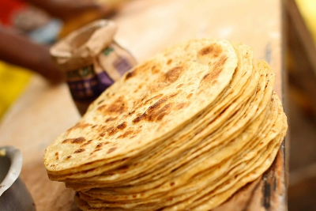

Toggle navigation
Derry African Market
Home
AfriTech
Products
Contact
About
FAQ
Great Products and Food!
Featured Products
Shito
Unga ya Ugali
African Black Soap
Pilau Masala
Kenya Quality Tea
Jumbo Jumbo Spice
We Cater!

Chapati
Samosas
Nyama Choma na Kachubali